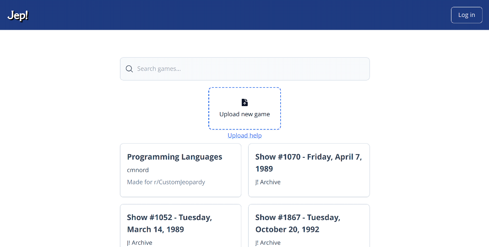
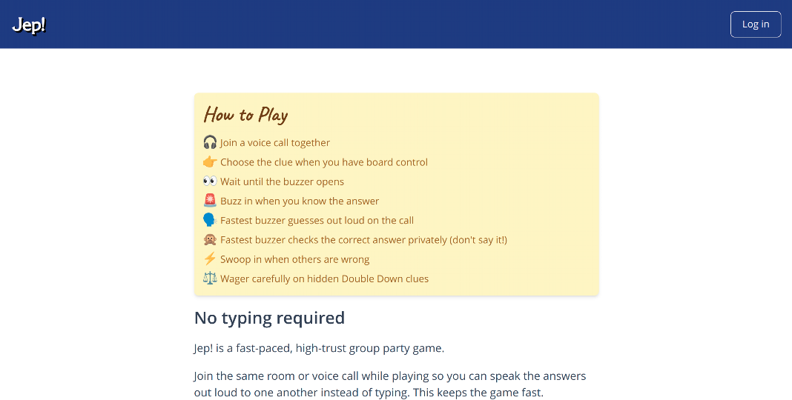
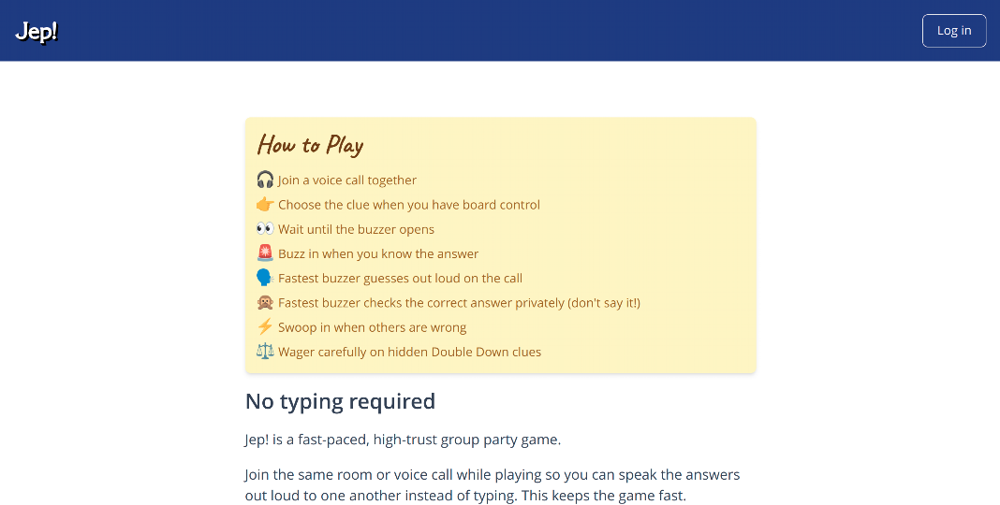

Redesigning Jep!
This is a concept redesign for Jep! -- a multiplayer online trivia created by Claire Nord. It brings the interface up to date, while preserving core elements, scenarios, and game mechanics. Most of the work was done in 20 hours.
To be clear: This redesign is not affiliated with Jep! or endorsed by its creators.
Before
After
 

Redesign adapts nicely to smaller screens:

The core element of the game -- the iconic board -- was redesigned to minimise scrolling and noise:
Before
After


Buzz-in interface was redesigned to minimise layout changes between game states:
Before
After
While at it, I also made a logo. It is based on the world map, because Jep! is an online group party game; to fit the whole world in a square I used the Mercator projection: